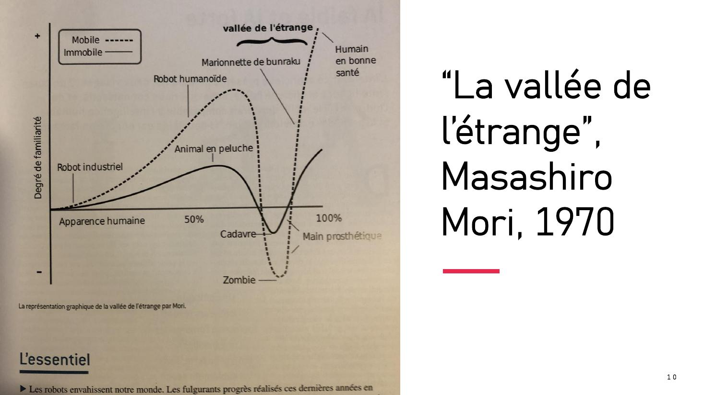

DIAPOSITIVES 8 à 11
Avant de craindre une chose, savoir de quelle chose on parle.
Faut-il avoir peur de l’IA ?
L’intelligence artificielle « forte » est-elle pour demain ?
La deuxième partie s’ouvre sur l’affiche de Terminator 3 : Rise of the Machines — qui donne son titre à l’exposé — et sur un sous-titre qui désamorce immédiatement l’image : « différents genres et espèces d’IA ». Le film sert d’appât, la taxinomie de réponse.
« Artificial Intelligence refers to a research programme across computer science, cognitive science, psychology, neuroscience, and philosophy that aims to develop and to understand non-biological intelligent systems.
The most promising approach to the study of artificial and other intelligence is a species-neutral, behavioural approach. This approach starts with a conception of intelligence as an agent’s ability to achieve goals in a wide range of environments. »
Le choix est lourd de conséquences et il est fait dès le départ : l’intelligence est définie par le comportement — la capacité à atteindre des buts dans une grande variété d’environnements — et sans privilégier aucune espèce. Autrement dit : la question « est-ce que ça pense comme nous ? » est écartée avant même d’être posée. Elle reviendra en force en fiche 6.

Mori range sur l’axe le robot industriel, le robot humanoïde, la marionnette de bunraku, la main prothétique, l’animal en peluche. Le point de l’exposé est que notre inquiétude devant l’IA n’est pas seulement rationnelle : elle a une forme, et cette forme était décrite cinquante-cinq ans plus tôt, pour des objets qui ne parlaient pas encore.
La diapositive les met en regard de la carte « The AI Universe », où les cinq termes apparaissent comme des cercles emboîtés et non comme une liste.
| IA discriminative | IA générative |
|---|---|
|
Produit du contenu nouveau — texte, image, son — à partir de ce qu’elle a appris. |
| Apprentissage symbolique | Apprentissage automatique |
|---|---|
| Les erreurs viennent de concepts ou de règles faux : l’énoncé sur les faits est VRAI ou FAUX. | Les erreurs résultent de la nature probabiliste du résultat : ce sont les « hallucinations ». |
C’est la distinction la plus utile de tout l’exposé pour un public non technique : une machine à règles se trompe comme un raisonnement se trompe, une machine statistique se trompe comme un pari se trompe. Ce ne sont pas les mêmes erreurs, et elles ne se corrigent pas de la même manière. La fiche 14 y revient avec un exemple imparable.